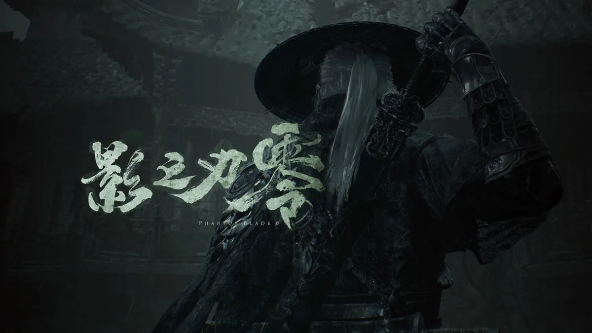

《影之刃零》：把武侠做成一记快刀

十月二十九日上午十点解锁，中午就坐上了 Steam 全球畅销榜第一。这种热度已经不需要谁再帮忙吆喝了，所以这篇不聊它有多火，只聊一件事：打起来到底爽在哪，以及哪些人可能会不适应。
「它不是让你等破绽，是逼你自己造破绽。」
先把名字说清楚
《影之刃零》是北京灵游坊（S-GAME）自己做、自己发的，创始人梁其伟从 2011 年那家小公司一路做过来，中间是《雨血》和《影之刃》系列。项目 2022 年正式立项，虚幻 5，公开说的研发成本在三四亿这个量级。
它借了《雨血》的世界观，但梁其伟特意讲过：人物关系、情感动机全部重做过，不建议套前作设定来读。所以没玩过前作完全不影响入坑，这作是独立故事。
比较意外的是甄子丹。他不是代言，是从 2023 年起担任监制，参与角色「魔渊」的面部捕捉、动作捕捉和动作设计，甄家班也进了研发流程。灵游坊还和北京理工大学合作做了角色动作匹配的智能动画系统，专门解决高速战斗里动作衔接不自然的问题——这些投入最后都落在手感上，不是落在宣传稿上。
六十六天
主角叫「魂」，是「组织」七大冥使之一，被构陷成杀害冥主的凶手，遭全员追杀。心脏受重创，被一位神秘医者救回来，代价是只剩六十六天可活。一边逃，一边查那场阴谋，时间是明摆着挂在脖子上的。
舞台叫「影境」，官方给风格起的名字是功夫朋克：中式武术、暗黑美术，掺进蒸汽机械、义肢和工业废墟，配乐里还有现代摇滚。整体偏冷、偏沉，不亮堂，跟那种仙气飘飘的武侠完全两回事。
打起来是什么手感
先说最容易被误会的一点：它不是魂类。普通攻击、闪避、翻滚都不吃体力条，敌人也不会排着队等你出手，节奏更接近《忍龙》《鬼泣》那一路的高速动作游戏。
核心资源叫「煞气」，进攻和防守共用同一条：招架、力量爆发、幻刃都从这儿出。武器给得也狠——三十多种主武器各有独立招式，二十多种「幻刃」副武器包括臂炮、重弓、钩斧；连段里切换主武器还能回一截煞气。于是连招不是背固定表，是边打边重组。
Boss 战多阶段，但阶段之间放了检查点，死一次不用把已经打过的阶段再打一遍。这个设计很实在：难度留在招式上，不留在跑路上。
不止一条直线
地图不是一整张开放世界，是相互连通的手工区域：岔路、聚落、隐藏区、拿到新能力之后值得回头再走一趟的地方。支线给武器、升级、隐藏 Boss，也会改变你对某些角色的理解。
结局有八个，由支线和收集驱动。主线大概 25 到 35 小时，支线和挑战认真清下来接近 45 小时——对一款以战斗为主菜的游戏，这个体量不算注水。
该知道的一些数字
- 发售：2026 年 10 月 29 日。原定 9 月 9 日，六月宣布延期约五十天打磨
- 平台：PS5、PC（Steam / Epic，国内另有 WeGame、TapTap PC）。PS5 主机限时独占一年，实体版计划 2027 年
- 定价：国区标准版 268 元，数字豪华版 328 元
- 评价：Metacritic 开分 88（PS5）/ 89（PC），IGN 给 9 分，IGN 中国满分
- 容量：PC 安装约 145 GB，预载建议留 300 GB；带 Denuvo
不完美的地方
夸的人基本都夸战斗，挑刺也集中：叙事讲得不够清楚，倒叙和闪回被多家媒体点名，悬念铺得够，但故事本身没走出新意。想冲着剧情来的，可能会有点落差。
技术上也还在收尾：发售当天补了约 5 GB 的首日补丁修光追和路径追踪，PS5 Pro 上部分 Boss 战有掉帧。关卡结构评价也不一致，有人觉得开阔有岔路，有人仍旧嫌线性。至于 145 GB 加 Denuvo，是 PC 党绕不开的实打实门槛。
所以推荐给谁
如果你喜欢「快」的动作游戏，愿意为一套招式手感反复练半小时，这款可以直接买，它最贵的那部分钱确实花在刀刃上。喜欢《鬼泣》《忍龙》，又一直嫌西式动作游戏没有武侠味儿的，这作几乎是等着你来的。
如果主要是被「国产 3A」这四个字吸引、想看一个讲得漂亮的故事，那建议再等等，先看看别人的实机。它把最难的那件事做成了——让剑快得有来路；但没打算把所有事都做完。
题图来自官方宣传素材，版权归北京灵游坊网络科技有限公司 / S-GAME 所有。